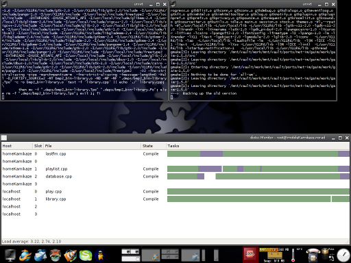

2.5. Distcc¶
Das Programm distcc wird dazu verwendet, die Rechenlast beim Kompilieren von C und C++ Programmen auf mehrere Rechner in einem Netz zu verteilen.
2.5.1. Einleitung¶
 Die Software besteht aus einer Client- und einer Server-Komponente. Die Server Komponente ist ein Daemon, der im Hintergrund auf Arbeit wartet. Da es bis auf IP-Adressen keinerlei Authentifizierung gibt, sollte der Dienst nur in vertrauenswürdigen Netzen oder über ein VPN erreichbar sein.
{kind=link}
2.5.2. Einrichtung¶
Zur Einrichtung ist außer der Installation auch das Anlegen einer Liste erreichbarer Server bzw. das Einrichten des Daemon erforderlich.
2.5.2.1. Installation (FreeBSD)¶
Der distcc findet sich in den FreeBSD Ports unter devel/distcc.
2.5.2.2. Installation (OpenBSD)¶
Da sich der distcc nicht im offiziellen Ports-Tree befindet, muss er hier entweder per Hand oder durch den inoffiziellen Port installiert werden. Letzteres ist der bevorzugte Weg (sauberer).
2.5.2.3. Client (FreeBSD)¶
Um FreeBSD als Client einzusetzen, muss das Verzeichnis /usr/local/etc/distcc angelegt werden. In das Verzeichnis gehört eine Datei namens hosts, die einfach die Hostnamen oder IP-Adressen errichbarer Server enthält.
# mkdir -p /usr/local/etc/distcc
# echo "localhost 10.0.0.11 otherHost" > /usr/local/etc/distcc/hosts
Die Adressen 10.0.0.1 und otherHost sind natürlich nur Beispiele, die durch passende Einträge ersetzt werden müssen.
Als nächstes müssen die Variablen CC und CXX in der Datei /etc/make.conf entsprechend gesetzt werden.
CC= /usr/local/bin/distcc cc
CXX= /usr/local/bin/distcc c++
Die absolute Pfadangabe ist wichtig für den Bau von Welt und Kernel.
Um von der Verwendung des distcc zu profitieren, muss make mit dem Parameter ‚-j N‘ gestartet werden, wobei N für die Zahl der parallel laufenden Jobs steht. Die distcc Dokumentation empfielt als Wert die Zahl der CPUs (oder Kerne) multipliziert mit 2. Wenn ein Rechner nur wenig Arbeitsspeicher hat, kann es aber auch Sinn machen, nur die Zahl der möglichen CPUs zu verwenden.
Die Verwendung mit den FreeBSD Ports ist kompliziert, da ‚-j‘ nicht unterstützt wird. Diese Einschränkung kann man weitestgehend mit buildflags umgehen, das es erlaubt, die Verwendung des distcc für einzelne Ports zu aktivieren oder zu unterbinden.
Beim Bau von Welt oder Kernel entstehen keine Probleme.
2.5.2.4. Server (FreeBSD)¶
Um den distcc Daemon zu verwenden, muss distccd_flags in der /etc/rc.conf gesetzt werden, da der Daemon sonst aus Sicherheitsgründen nur auf Anfragen von localhost wartet. Um den Daemon automatisch beim Booten zu starten, muss außerdem distccd_enable auf ‚YES‘ gesetzt werden.
distccd_enable="YES"
distccd_flags="-a 127.0.0.0/8 --listen 127.0.0.1 -a 192.168.0.0/16 --listen 192.168.1.12 --user distcc --daemon -P /var/run/distccd.pid"
Im Beispiel hört der Daemon auf Anfragen an localhost (127.0.0.1) und an der IP 192.168.1.12. Aufträge werden von allen Rechnern, deren IP mit 127 oder 192.168 beginnt, angenommen.
Um den distcc Daemon ohne Neustart zu starten, kann der Befehl
# /usr/local/etc/rc.d/distccd start
verwendet werden. Wer auf den automatischen Start beim Booten verzichten will und deshalb distccd_enable nicht setzt, kann den Daemon mit dem Befehl
# /usr/local/etc/rc.d/distccd onestart
aktivieren.
2.5.3. Zusammenarbeit zwischen i386 und amd64¶
Um Rechenzeit in einen Verbund aus einer i386/amd64 Mischung zu verteilen müssen die Compiler erfahren für welche Architektur sie compilieren sollen. Diese Information gehört in die CFLAGS der distcc Clients.
Die folgenden Zeilen in der Datei /etc/make.conf unter FreeBSD
bewerkstelligen das für einen i386-Client.
.if ${.CURDIR:M/usr/ports/*}
CFLAGS+= -m32
.endif
Für einen amd64-Client heißt der Parameter schlicht -m64. Eine Lösung zum Bauen von Welt und Kernel wurde vom Autor noch nicht getestet.
2.5.4. Verweise¶
http://distcc.samba.org die distcc Homepage.
devel/distcc in den FreeBSD Ports.
devel/distcc in Pkgsrc.
Zuletzt geändert: 2020-11-23